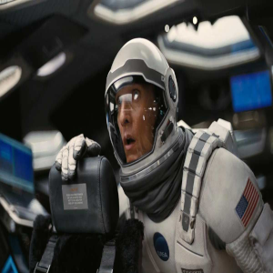
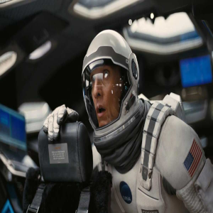

As reservas naturais da Terra estão chegando ao fim e um grupo de astronautas recebe a missão de verificar possíveis planetas para receberem a população mundial, possibilitando a continuação da espécie. Cooper é chamado para liderar o grupo e aceita a missão sabendo que pode nunca mais ver os filhos. Ao lado de Brand, Jenkins e Doyle, ele seguirá em busca de um novo lar.
 
